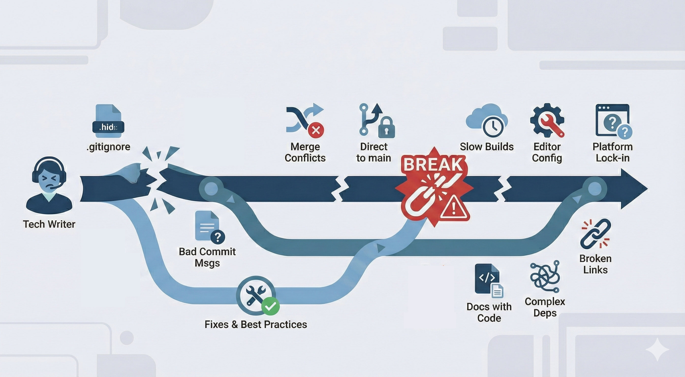

12 docs-as-code gotchas for technical writers
And how to fix them before they break your build
You've made the switch to docs-as-code. Git makes sense. Branches are fine. Your editor works.
Then your build fails for no visible reason. Or your perfectly formatted link renders as plain text. Or you spend an hour resolving a merge conflict that shouldn't exist.
These are the gotchas that nobody warns you about. The invisible problems that make you question whether you typed something wrong, broke something critical, or just don't understand how any of this works.

Note: This article covers environment-specific and markup-specific gotchas. For fundamental Git workflow practices like branching strategy, commit messages, pulling frequently, and handling merge conflicts, see my companion post Git hygiene for technical writers.
In this article:
- The hidden .gitignore file
- Your editor config matters
- You can't delete history (and that's good)
- Trailing spaces break cross-references
- Build times vary wildly
- Documentation lives with code
- Pull request review isn't universal
- Platform-specific features don't transfer
Gotcha #1: The hidden .gitignore file
There's a file called .gitignore that tells Git what NOT to track. This file is invisible in most file browsers because it starts with a dot.
Why it matters: If your builds keep failing or files aren't appearing, check if they're listed in .gitignore.
How to see it: Use Command (⌘) + Shift + Period (.) in Finder on MacOS, "Show hidden files" on Windows, or ls -la on Linux.
Gotcha #2: Your editor config matters
Different editors have different defaults for tabs vs. spaces, file encoding, and line endings.
Fix: Create an .editorconfig file in your repository root:
root = true
[*]
charset = utf-8
end_of_line = lf
insert_final_newline = true
trim_trailing_whitespace = true
indent_style = space
indent_size = 2This makes everyone's editor behave consistently.
Gotcha #3: You can't delete history (and that's good)
Once you commit something, it's in the Git history forever. Even if you delete it in the next commit.
Implication: Don't commit passwords, API keys, or sensitive information. Ever.
If you do: Tell your security team immediately. The repository needs special cleanup.
Gotcha #4: Trailing spaces break cross-references
Trailing whitespace inside attribute values can break cross-references and links. How much this matters depends on your markup language.
XML/DocBook (strict): Parsers treat extra space as part of the unique identifier. The link <xref linkend="section-id"/> fails to match the target <section id="section-id "/> because "section-id" and "section-id " are different identifiers.
Markdown (forgiving): Generally handles whitespace gracefully, though reference-style links can fail if the reference ID has trailing spaces.
HTML (somewhat forgiving): Fragment links like <a href="#section-id "> won't match <div id="section-id">, but HTML parsers are more lenient than XML parsers.
The problem in XML (shown as example):
<!-- Broken: space in the link reference -->
<xref linkend="section-id "/>
<!-- Broken: space in the target ID -->
<section id="section-id ">
<!-- Works: no trailing spaces -->
<xref linkend="section-id"/>
<section id="section-id">Why it happens: XML parsers don't automatically trim whitespace from attribute values. An ID like id="chapter1 " is treated as completely different from id="chapter1". The build system looks for an exact match and can't find it.
Symptom: Links that look fine in your editor don't work in the built documentation. Cross-references render as plain text instead of hyperlinks. Build validation may report "target not found" errors even though you can see the target right there in the source.
Prevention (works for all markup languages): Configure your editor to show whitespace characters and trim trailing spaces on save.
In VS Code:
"files.trimTrailingWhitespace": true,
"editor.renderWhitespace": "all"In Oxygen XML Editor: Enable "Show whitespace" in preferences and set "Remove trailing whitespace" in formatting options.
Advanced fixes for XML: If you're building XSLT transformations or XML processing pipelines, use <xsl:strip-space elements="*"/> to remove unnecessary whitespace during transformation. For JSON-to-XML converters or other XML generators, configure them to trim leading and trailing whitespace from attribute values before output.
My experience: This caused so many mysterious build failures for me. I'd commit what looked like a perfect link, but the build would fail or the link wouldn't work. The space inside the quotes is nearly invisible but completely breaks ID matching. I learned to always enable whitespace visualization in Oxygen and to configure automatic trimming on save. The problem can be on either end of the reference—in your linkend attribute or in the target's id attribute. Both need to be clean.
Gotcha #5: Build times vary wildly
If your docs-as-code system has a local build command, use it. But understand that local builds and production builds can be very different experiences.
Why: You'll catch broken links, syntax errors, and formatting problems before they hit the repository. But local builds might complete in seconds while production builds take hours.
My experience: Our local Oxygen builds were nearly instant. You could see your XML render immediately. But pushing to the internal Git farm triggered a custom build system that could take 2-4 hours to fully propagate changes to the public doc site. This created a workflow challenge. You couldn't quickly iterate on customer-facing changes. Every push needed to be carefully tested locally first.
What to ask in interviews: "How long does a typical build take from merge to live?" and "Can I preview changes before they go live?" These answers will tell you a lot about your day-to-day experience.
Typical commands:
# Test the build locally
make build
# Or
npm run build
# Or whatever your system usesGotcha #10: Documentation lives with code
In many docs-as-code setups, your documentation files live in the same repository as the actual product code.
Implication:
- You'll see code files you don't need to touch
- Builds might include compiling actual software
- You need read access to proprietary code
Navigation tip: Learn the repository structure early. Know where docs live vs. code.
Gotcha #11: Pull request review isn't universal
Many docs-as-code guides assume every change goes through pull request review. This isn't always true.
Why it matters: You might see job descriptions or tutorials that emphasize peer review workflows, but the actual practice varies widely by company and team.
My experience: Our Git system supported Change Requests (CRs, basically pull requests), but most writers merged their own work without review. If you owned your docs package, you were trusted to maintain quality independently. Review workflows existed but were optional.
What to ask in interviews: "What's your review process for documentation changes?" The answer tells you about trust levels, team size, and quality assurance practices.
Gotcha #12: Platform-specific features don't transfer
GitHub has features like Actions, Projects, and Discussions. GitLab has different features. Internal Git systems have their own custom tooling.
Why it matters: When you switch companies or platforms, you're learning that platform's entire content ecosystem.
My experience: I got very comfortable with our internal review system, build triggers, and preview tools. Now when I look at GitHub repositories, I'm relearning how to set up Actions, understand Checks, and use Projects. The Git fundamentals (commit, branch, merge) are identical. The platform features are completely different.
What this means: Don't assume your docs-as-code experience at one company will transfer perfectly to another. The core Git skills do transfer. The platform-specific workflows don't.
You got this
After years of managing writers in docs-as-code environments, I can tell you this: everyone hits these gotchas. Senior developers who've used Git for a decade still Google how to fix merge conflicts. Experienced technical writers still lose time to trailing spaces in XML attributes.
The difference between a frustrating experience and a productive one is knowing these problems exist and having the fixes ready.
Most of these issues have straightforward solutions:
- Configure your editor once to show whitespace and trim trailing spaces
- Learn your .gitignore and .editorconfig files
- Pull frequently, push infrequently, delete merged branches immediately
- Ask about platform-specific features in interviews
You won't avoid all of these problems. But you'll spend minutes fixing them instead of hours wondering what's wrong.
The goal isn't Git expertise. The goal is comfortable productivity. Know where the invisible obstacles are, and docs-as-code becomes infrastructure you barely think about.
Looking for specific Git workflows for technical writers? Check out my post on What to expect when you're expecting docs-as-code: A tech writer's field guide to Git workflows for the commands and workflows that make docs-as-code work.